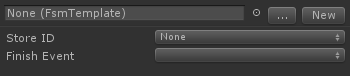

Creates an FSM at runtime from a saved Template The FSM is only active while the state is active. This lets you nest FSMs inside states.
This is a very powerful action! It allows you to create a library of FSM Templates that can be re-used in your project. You can edit the template in one place and the changes are reflected everywhere.
NOTE: You can also specify a template in the FSM Inspector.
Fsm Template
The Template to use. You can drag and drop, use the Unity object browser, or the categorized popup browser to select a template.
Create New Template
This lets you quickly create a new template without leaving the selected FSM. For example, if you want to quickly nest an FSM inside a state, use this to make the nested FSM.
Edit Template
If you have a template selected, use this to open it in the editor. Hint: Use the Back button in the selection toolbar to get back to the parent FSM.
Input
Any variables in the template exposed to the Inspector will appear as Inputs. You can enter values or hook up variables to these inputs. This allows you to make re-usable FSM components! For example, you might have a Spawn Enemy FSM that has number of enemies as an Input.
Store ID
This allows other actions to reference the created FSM (not widely used yet)
Finish Event
Event to send when the created FSM has finished (usually because it ran a Finish FSM action).